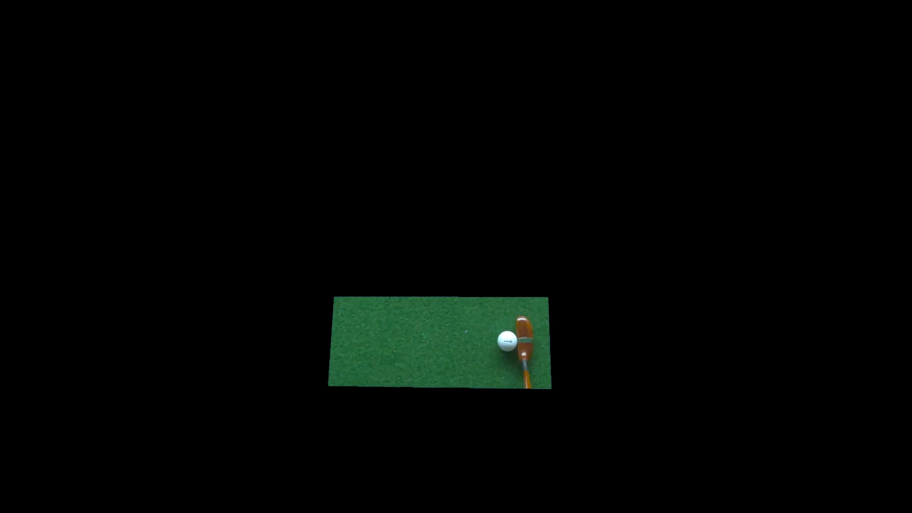
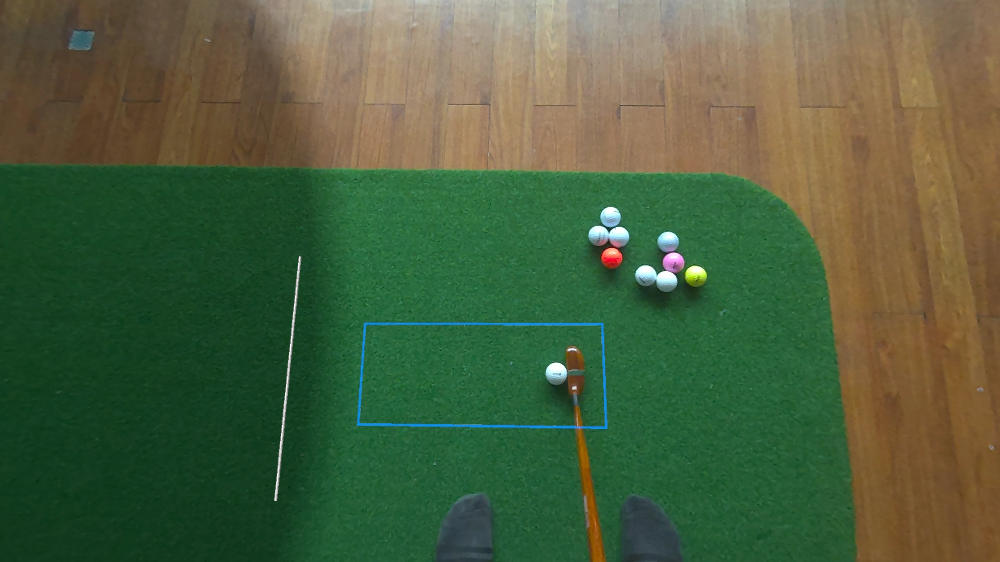

I'm not a golfer. I've never played a round in my life. But I've spent over three years obsessing over what happens in the tenth of a second after a putter strikes a golf ball — because that window turned out to be the key to building something new and useful that did not exist before.
I’ve been digging deep into a specific technical design challenge: how to bring a real, physical ball into mixed reality. My motivation has never been to build a cool tech demo or a flashy video; I wanted to push the boundaries of mixed reality design and build a product with genuine utility.
My app, Putt Dojo, is the result of this work. It uses a custom computer vision algorithm applied to the passthrough camera data of the Meta Quest 3/3S to calculate the speed and direction of a real golf ball the moment it’s struck with a putter. Once the initial motion is determined, the app replaces the physical ball with a simulated version that continues the ball's trajectory into a virtual environment. The trick is the handoff: making the player believe the real ball has simply rolled through a magic window onto a virtual golf green.
This is the story of the design and development process that led to Putt Dojo.
Just get it working
The path to building this product involved a long period of trial and error, learning, and refinement. When I began this work in 2023, the Meta Quest Pro had recently launched. It was the first consumer headset to support color passthrough, but Meta had not yet given developers a way to access the raw onboard camera data. At that stage I did not have a particular product in mind that I wanted to build. I just wanted to get a firsthand sense of the potential value that real-ball tracking has in mixed reality. I wanted to get something working without concerning myself with the constraints of an easy end-user product experience, so I rigged up a pair of external webcams and a separate computer and set out to make a prototype of real-ball tracking in a headset.
Using this basic approach, I was able to get a fairly accurate and low-latency 3D ball position, and begin to explore different ways of using a tracked ball in mixed reality experiences. This work helped me understand how a ball could look in the headset, get a feel for the limitations and latency, and make more grounded judgments about potential products that could be made.
A portal into a virtual world
I quickly found that the spatial arrangement of having a “portal into a virtual world” provided a nice balance: it kept the user feeling present and comfortable in their physical space while still retaining a strong sense of scale and immersion that mixed reality headsets excel at. With an appropriate backstop set up, hitting tennis balls and kicking soccer balls through this portal felt incredibly physical and compelling. This was something fundamentally cool that nobody had ever seen before: an interactive mixed reality experience that used a real ball.
When I showed these early prototypes to people in industry and academia, the response was positive. Many people expressed excitement about the potential of real-ball tracking, and I had some interesting conversations about the different directions this work could go in. These conversations helped me refocus on my original goal. I wanted to build a new kind of product that people would actually use, not just a tech demo that looked cool in a video. It was then that I decided to find a more concrete problem to solve. I needed to find a customer.
Why golf?
That’s when I turned to golf. Those who play golf love to practice wherever they happen to be, and there are many who already train putting indoors using a putting mat or carpet. The right mixed reality app could meet them exactly where they are, transforming a limited practice setup into a more varied and fun training system. So I decided to turn the ball-tracking prototype into a putting simulator for the Meta Quest 3. Putt Window (now Putt Dojo) was born.
Focusing on putting simplified the tracking problem considerably. The ball starts stationary, the important motion is limited to the ground plane, and the spin of the ball is largely irrelevant. These reduced requirements meant that I could use a single webcam rather than two, but the first version of the app, launched in October 2024, was still clumsy. The additional camera and computer requirement, as well as a manual alignment step, made the app pretty tedious to use. Almost no one used these early versions of the app, as the setup friction was much too high.
Reducing friction
If I wanted to build a product that people would actually use, I had to make it as easy as possible to get started. Wearing a headset is already a barrier to entry. Every extra requirement I added on top of that meant fewer people would make it through to the part where the app became valuable. A significant part of developing Putt Dojo was removing those barriers one by one: less setup, less equipment, less friction between the value of the app and the person trying to use it.
A key moment in this journey came in the first half of 2025, when Meta opened up access to the onboard passthrough camera data. Suddenly, a much simpler product design was possible. If the headset could see the ball directly, I could remove the external camera and computer entirely. That would be a huge win for the user, but getting there was far from straightforward. It took months of intense experimentation to adapt the tracking system to run natively on the headset, followed by ongoing work to handle edge cases and refine the setup process until it felt reliable and easy for the end user.
One of the first challenges with using the onboard cameras is that they are constantly moving. With an external webcam, I could ask the player to place the camera close to the ball in order to maximize the useful resolution, and I could rely on the camera staying still. With the headset cameras, those assumptions no longer hold. The camera moves with the player's head, the ball occupies only a small part of the image, and the tracking system has to keep working even as the view changes from frame to frame.
The passthrough cameras are designed for a wide field of view, which means the ball takes up only a small part of the overall image. For a tracking algorithm, that is a problem. Tracking is a constant battle against noise, and the more irrelevant image data the algorithm has to process, the higher the chance of it making a bad decision. One of the key insights was to define a spatial region of interest and ignore everything outside it. Instead of asking the algorithm to understand the whole camera feed, I could make it focus on the only part that really matters for putting: a small patch of ground at and ahead of where the ball is placed. This reduces the number of things that can go wrong and constrains the problem to 2D tracking along the ground plane.


The algorithm also had to work across different lighting conditions and surfaces. My first approach was similar to the early prototypes: track the ball by color. In a well-lit room this worked nicely, but it became unreliable in low light. I experimented with letting the user adjust the color thresholds manually, but that pushed too much of the problem onto the player. It made the app feel fiddly, which was exactly what I was trying to avoid. The better approach was to rely less on the ball's color and more on what I already knew about it. I used the Circle Hough Transform to lock on to the known size and circular shape of a golf ball, then sampled its color after finding it. This was more complex, but it made the system much more robust across a wider range of rooms and surfaces. It also meant people could use different colored golf balls, which was a nice bonus for user choice.
Latency was another critical problem. The whole app depends on the illusion that the real ball moves seamlessly into the virtual environment, so any mismatch during that handoff is immediately noticeable. There is a delay involved in capturing the passthrough image, and the tracking system needs a couple of frames before it can confidently estimate the ball's trajectory. In practice, the total delay is about 100-130 milliseconds. That does not sound like much, but for a moving golf ball it is enough time for the physical ball to be well on its way before the simulated ball can even appear.
The Meta Quest passthrough cameras use a rolling shutter, which means different parts of the image are captured at slightly different times. A ball near the top of the frame is recorded a little earlier than a ball near the bottom. By combining the camera frame timestamps with the ball's position inside the image, I could get a pretty good estimate of when the ball actually started moving. Then, instead of spawning the simulated ball at the current time and letting it lag behind, I spawned it at the original position and stepped the simulation forward by the estimated latency. The result is that the player never sees a significant mismatch between the real ball and the simulated one, which helps preserve the illusion that the ball has simply rolled through a portal into the virtual world.
Finally, all of this had to run on the Quest 3's mobile chipset, while still leaving enough performance headroom for the rest of the app. I ended up breaking the algorithm down into a series of GPU operations implemented as compute shaders. The Quest 3 passthrough cameras top out at 1280x1280 resolution, but pushing high-resolution image data through the GPU has a real performance cost. By aggressively downsampling, optimizing, and removing unnecessary steps, I eventually pushed the app past the 90 frames per second target I was aiming for. After working through each challenge one by one, I had an accurate, reliable real-ball putting system running natively on the Quest 3. A major barrier between the user and the value of the product was gone, and the app started to gain more traction.
Today, Putt Dojo runs entirely standalone on the Meta Quest 3/3S, delivering an experience at 90 frames per second that can turn a living room into a putting green with no external camera, no computer, and no awkward calibration ritual. That is the part I care about most: the technology fades into the background, and the player just gets to putt. Building that required more than a good tracking algorithm. It required craft in the setup flow, in the performance work, and in the careful arrangement of the physical and virtual elements so the player does not have to think about where one ends and the other begins.
The road ahead
Recently, I’ve started seeing similar designs show up in other golf products across the mixed reality space, so I think it's worth documenting where this version of the idea came from. When you spend years working through a problem from first principles, the finished design can look obvious in hindsight, so it's important to reflect on the process. That is how good product ideas tend to move. Once a design works, it starts to feel inevitable.
I do not want the foundational work behind Putt Dojo to get lost in that noise. This app is the product of a long, sometimes messy process of making a real physical ball work inside mixed reality in a way that is accurate, comfortable, and simple enough for normal people to actually use. That foundation now feels complete. The tracking works. The setup works. The physical-to-virtual handoff works. The next challenge is not to keep proving the core idea, but to build something more distinctive on top of it.
That is where Putt Dojo goes next. I still do not think of myself as a golfer, but I have learned to appreciate how much serious practice depends on repetition, feedback, and motivation. The opportunity now is to make that practice feel more engaging without making it less useful: to use mixed reality not just to simulate a green, but to create better reasons to keep putting. The product design problem is mostly solved. Now it is time to focus on the experience built on top of it.
If you’d like to follow what comes next — or share what you’d like to see in the app — the Putt Dojo Discord is the best place to do it.